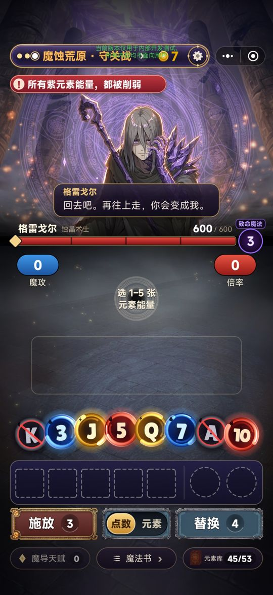
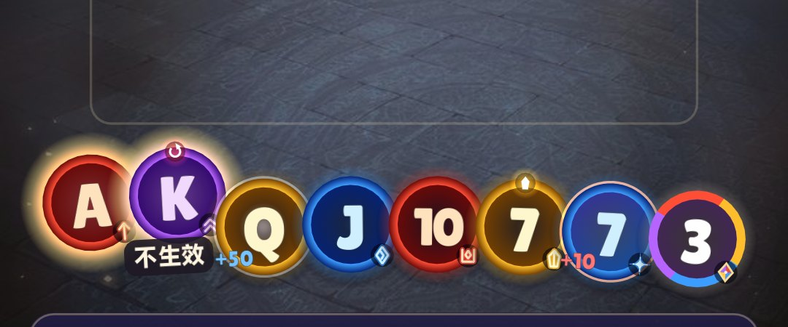
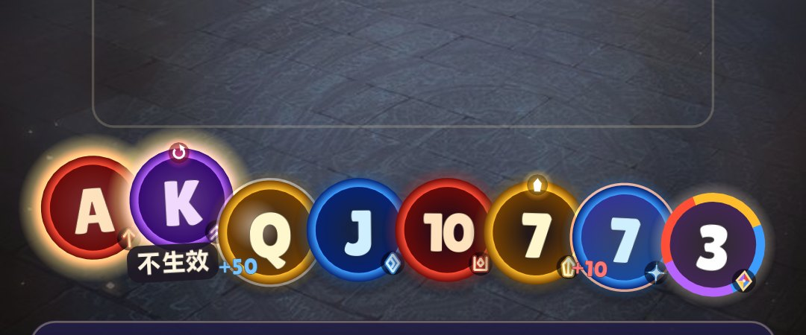
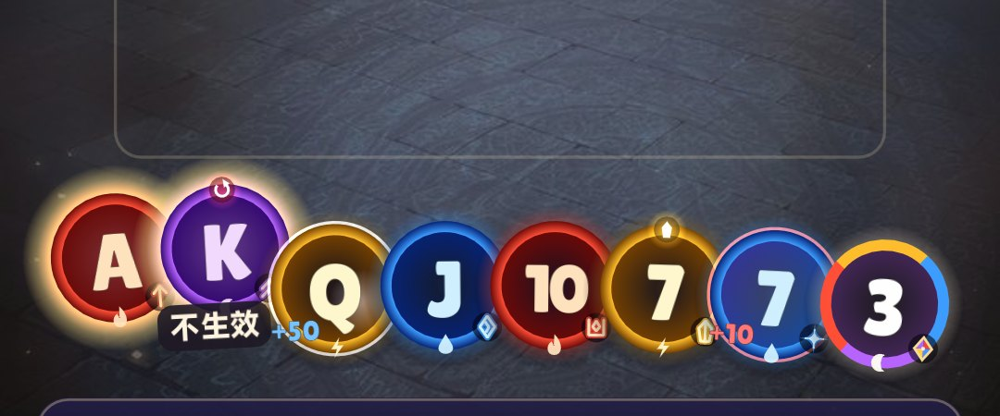
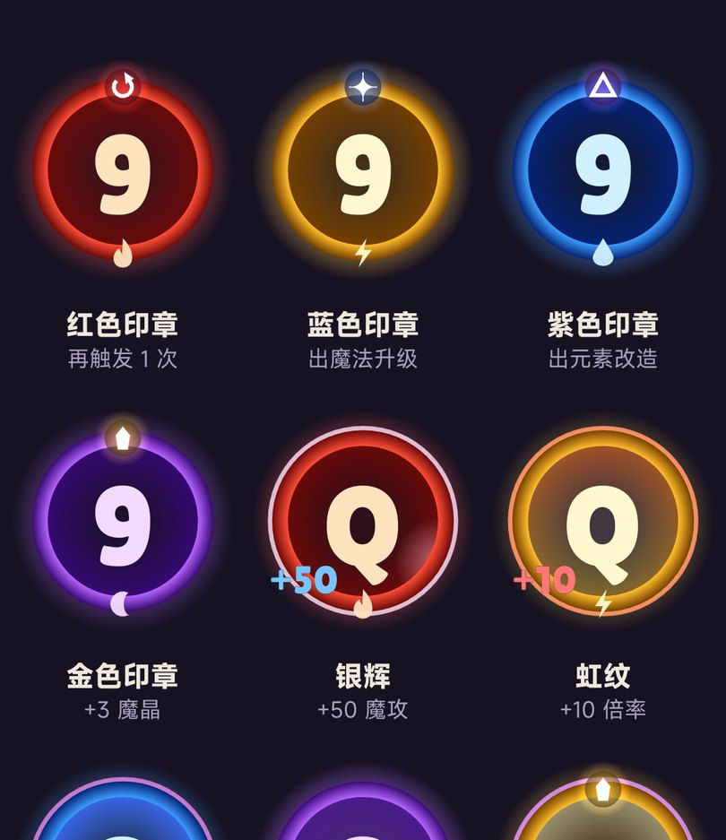

手搓魔法 · 元素能量球 设计方案（第三轮，仅方案，未进游戏）
全部画面都是用游戏自己的渲染器离线渲染的（手机竖屏 1080×2340 / 540 宽），所以就是进游戏后的样子。请在每一节选一个字母：大小 · 流动 A/B/C · 元素符号 去掉/可选 · 强化标志 I/II/III。选定后我再做进游戏。
参考：你手机上的现状（第二轮）

1. 球体大小：+5%（0.80 → 0.84 卡宽）
手牌 8 张，选中 2 张（A、K），手机尺寸。编号大小不变，始终居中。
现版 0.80

新 0.84（+5%）

2. 能量流动效果（三选一）
都比现版收敛很多，编号始终是视觉中心；选中的牌（A、K）流得更快更亮。下面每个都是 4 秒循环视频（只截手牌区域，点「整屏」看完整画面），再下面是 4 个时刻的静帧。每帧开销是 8 张手牌时局内整帧的 Lua 绘制时间（同一台机器，浸泡测试）。
| 方案 | 效果 | 每张牌多画 | 局内每帧绘制 |
|---|---|---|---|
| 现版（参考） | 两条宽光带 + 细光丝 + 内圈逆流 + 核心等离子 | 4 条渐变描边 + 1 填充 | 3.07 ms |
| A 细光沿环 | 一条很细很淡的光沿着环慢慢走，核心不动 | 1 条描边 | 2.83 ms |
| B 核心呼吸 | 没有任何移动的光带，球心一层柔光慢慢呼吸 | 1 个填充 | 2.75 ms |
| C 流光一闪 | 平时静止，每 3–4 秒一道小高光绕环跑一圈（选中时约 1 秒一圈） | 0–1 条描边（只在跑的那一下） | 2.98 ms |
3. 左上角的黑色小图标
那是「元素符号」（火 / 雷 / 水 / 暗），本意是给色弱玩家区分四种元素。默认去掉（上面所有方案图都已经去掉了）。
（可选）替代做法：环底部一个小元素符号，用环本身的颜色发光
红=火焰、黄=闪电、蓝=水滴、紫=月牙，一眼能看懂是「什么元素」。不要的话就保持去掉。


4. 强化 / 印章 / 特效标志（三个方向，重点）
规则：除了万素符卡（多彩能量）和石化魔攻卡（石壳、无点数），强化不改变能量本身的颜色。每个方向都给出：手牌尺寸全表、2 倍放大（强化 / 印章+特效）、叠加示例（强化 + 印章 + 特效）、8 张手牌实景。名字下面是玩家能看到的效果。流动效果统一用 B 以便只看标志。
| 方向 | 强化 | 印章 | 特效 | 一句话 |
|---|---|---|---|---|
| I 环上刻符 | 环右下刻一个小发光符文，和球同色，没有底座（魔攻=矛、倍率=双箭头、琉璃=裂晶、留手倍增=托槽、聚晶=魔晶、幸运=星） | 环顶刻印章符号，印章颜色发光 | 球面光泽 + 环左下直接刻数值（+50 蓝 / +10 红 / ×1.5 红） | 最融合、最安静，但符文要学 |
| II 垂挂符箓 | 环最下方用金线挂一张小「符」，符的颜色 = 它加的东西：+30 蓝（=魔攻蓝泡泡）、+4 红（=倍率红泡泡）、琉璃 ×2、留手 ×1.5、聚晶 +3 金、幸运 ? 绿；万素挂四色晶 | 环顶嵌一颗印章色宝石 | 球面光泽 + 环左下小数值牌 | 一眼看懂数值，最「自解释」 |
| III 环的纹理 | 环本身换花纹（不换颜色）：魔攻=符文点链、倍率=双环、琉璃=多面切割、留手倍增=锁链、聚晶=嵌魔晶、幸运=绿色星芒；另有一个很小的符文 | 环顶一段换成印章色的环扣 | 球面光泽 + 环左下刻数值 | 远看就能分辨，最有「装备感」 |


我的推荐
大小 0.84 · 流动 B（核心呼吸）· 元素符号去掉 · 强化标志 II（垂挂符箓）
· B 完全没有移动光带，最安静，编号最突出，也最省（比现版每帧少约 0.3 ms）；如果还想要一点「动」，可以 B 加 C 的偶尔一闪。
· II 直接把数值写在符上，并且沿用局内魔攻蓝 / 倍率红两个泡泡的颜色，玩家不用学符号就知道这张牌加什么；挂在球下方，不压编号，也不改能量颜色。
· I 最融合但符文小、要记；III 远看好认，但锁链/双环在 8 张手牌时偏花，和「不要能量环」的要求也最接近冲突。
· B 完全没有移动光带，最安静，编号最突出，也最省（比现版每帧少约 0.3 ms）；如果还想要一点「动」，可以 B 加 C 的偶尔一闪。
· II 直接把数值写在符上，并且沿用局内魔攻蓝 / 倍率红两个泡泡的颜色，玩家不用学符号就知道这张牌加什么；挂在球下方，不压编号，也不改能量颜色。
· I 最融合但符文小、要记；III 远看好认，但锁链/双环在 8 张手牌时偏花，和「不要能量环」的要求也最接近冲突。
以上均为方案，游戏 main 分支和测试包没有改动。